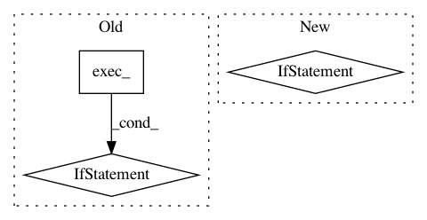

ccff74073de23acb491af32e11cbdd6bb9164f35,labelme/widgets/label_dialog.py,LabelDialog,popUp,#LabelDialog#Any#Any#Any#,186
Before Change
self.edit.setFocus(QtCore.Qt.PopupFocusReason)
if move:
self.move(QtGui.QCursor.pos())
return (self.edit.text(), self.getFlags() if self.flags else None) if self.exec_() else (None, None)
After Change
self.edit.setFocus(QtCore.Qt.PopupFocusReason)
if move:
self.move(QtGui.QCursor.pos())
if self._exec():
return self.edit.text(), self.getFlags() if self.flags else None
else:
return None, None
In pattern: SUPERPATTERN
Frequency: 3
Non-data size: 3
Instances
Project Name: wkentaro/labelme
Commit Name: ccff74073de23acb491af32e11cbdd6bb9164f35
Time: 2019-05-15
Author: cmerchant@camgian.com
File Name: labelme/widgets/label_dialog.py
Class Name: LabelDialog
Method Name: popUp
Project Name: ilastik/ilastik
Commit Name: 30a1ef9065d8f6f1df870d41c53738e01134d1af
Time: 2013-04-09
Author: ben-heuer@web.de
File Name: ilastik/applets/dataSelection/dataSelectionGui.py
Class Name: DataSelectionGui
Method Name: getImageFileNamesToOpen
Project Name: ilastik/ilastik
Commit Name: a56077ccaaccab72728d1254895ddb6104361f27
Time: 2013-04-10
Author: ullrich.koethe@iwr.uni-heidelberg.de
File Name: ilastik/applets/base/appletSerializer.py
Class Name: AppletSerializer
Method Name: repairFile